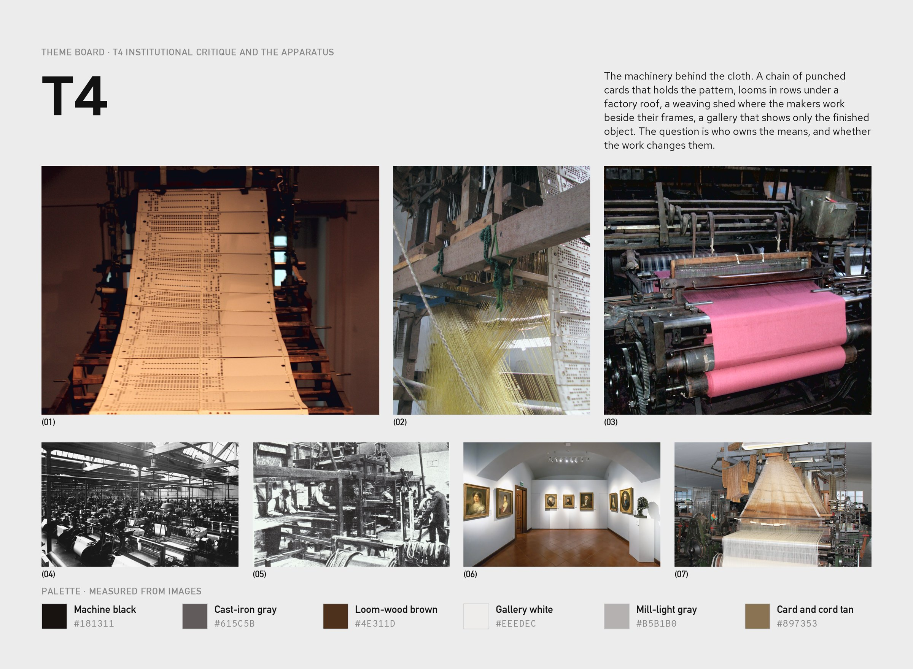

Who owns it
Not who made it, who owns it.


Abstract
When people argue about a thing, who made it, whether it is art, whether it is harmful, what are they really asking? Followed far enough, most of these arguments turn into questions of ownership: who owns the means, the name, the skill, the person and the ground where the thing ends up. The turn is old. The first copyright law (1710) gave rights to authors, but the London booksellers pushed it through; in 1831 the silk weavers of Lyon rose not against the Jacquard loom but over the price paid for their cloth; Halston sold the rights to his name in 1973 and later lost the right to design under it. Walter Benjamin turned the question in 1934, asking not a work's attitude to the relations of production but its position in them; institutional critique made that position its material, and Andrea Fraser concluded, "We are the institution." The law can even make the payer the author: in American copyright, a work made for hire belongs, authorship included, to the party that hired the maker. The skill stays partly with the maker, and lasts only if someone records and reproduces it. An object's standing moves with its owners and its links, not its material. In 1923 Liubov Popova and Varvara Stepanova designed prints for a state textile factory in Moscow; the prints did not change, but within a decade the Party had dissolved the independent art groups and the avant-garde lost its place. Today the same turn runs through tools and data: arguments over whether generated work is authored often stand in for who owns what it learned from and who is paid. The question reaches the person. Status is a set of things one is allowed to own: the freedom to move, property, the choice of what to buy, food, hygiene and shelter, how one feels, and in the end one's life. Law protects each, but none for good; when status is stripped it often goes from the outside in, each step called an emergency, and some never return. Hannah Arendt (1951) named what goes first: the right to have rights. Feeling seems the most our own, and we are appalled when someone tries to steer it. Yet Arlie Hochschild (1983) found workers paid to manage their feelings for a company; to feel freely, and to have that feeling count, is partly a privilege of status, and if feeling can be shared, as Durkheim and Raymond Williams described, so can its ownership. The question outlives the thing. It is not who made what becomes trash, but who owns the trash, the landfill and the sea it reaches; a spill can be fined, but no one holds title to the ocean it harmed. Out of touch: blaming the object or its material, the maker or the tool, while the decision and the benefit sit with whoever owns the means; and treating rights as permanent when each can be suspended. This theme reframes questions of authorship as questions of ownership, from the loom to the skin to the landfill, so that concern reaches the party that can act on it.
Impact: Direction
Every mark on a product, whether monogram, label, logo or signature, speaks in the maker's voice while it works as the owner's claim; Rembrandt signed "made it," but Degas's red stamp was added by his estate to sell what he left. Marks have been copied for as long as there have been marks, and style was never protected; what is new is how quickly a look is copied and how alike the marks themselves have become, until the cue that once said whose it was begins to fade. Marks are moving into data, where they could say who owns a thing, though only to whoever holds the record. Making follows. When anyone can make the same thing as well, the barrier turns out to have been labor and time, not taste. When making costs almost nothing, ownership moves to whoever owns what removes the friction (the machine, the model, the platform and the data it learned from) and to whoever owns attention. Authenticity is an ownership claim dressed up as a quality. The value of an art object has always rested somewhere other than its making, and that measure may be fading too. Whether design is good or bad is, unfortunately, an ethical question, and one with no right answer: the art world and the market each answer it differently, and neither answers it for good. What will good and valuable design be when anything can be made well, cheaply and quickly, with little waste, on a perfect line at home or in a large factory?
Overall mood
The machinery behind the cloth. A chain of punched cards that holds a pattern, looms in rows under a factory roof, a weaving shed where makers work beside their frames, a gallery that shows only the finished object. The pictures look at how cloth gets made and shown, and ask who owns the means. Light is even and documentary; color stays near black, gray and loom-wood brown, with one pink cloth as the single bright note.


Definition and test
Test. Who owns the means that produced it, and does the work change that?
It can show the apparatus (what makes the cloth), the scale and setting it sits in, who stands at it, and the frame the finished object is shown in.
Motifs
Each motif is taken from a sentence in the sources above.
| # | Motif | Theory sentence it comes from | Images |
|---|---|---|---|
| 01 | The program in the machine: punched cards, lifting cords | "the means of producing culture" / apparatus of production | (01), (02) |
| 02 | The machine as property: looms in rows on one floor | "Who owns the means that produced it" | (03), (04) |
| 03 | The maker at the frame: workers beside their looms | "does the work change that?"; the research: a worker can grow more productive while becoming less powerful | (05) |
| 04 | The institution frame: white walls, finished objects, a mill kept as a museum | institutional critique in the theme title; Benjamin, "not only its message" | (06), (07) |
Weak motifs. 03 is weak: one photo (05) of a shed where makers work, with tiny figures; it shows people at the apparatus, not that they own it.
Against (what T4 opposes)
Benjamin's framing the AI question is less about authenticity than about who owns the apparatus.
Counter-case
None on the board. A counter-case here would be a work that carries a critical message on an unchanged apparatus (for example a slogan on a mass-produced shirt). Searches on Wikimedia Commons for such an image returned nothing clearly licensed and legible, and a photograph of a shirt cannot show that its apparatus is unchanged. Image (03) is not a counter-case: it shows a machine, and no one's claim about it. Open item.
Color direction
No. The palette below is measured from the seven images and describes this board only; it is not a proposal for the color library.